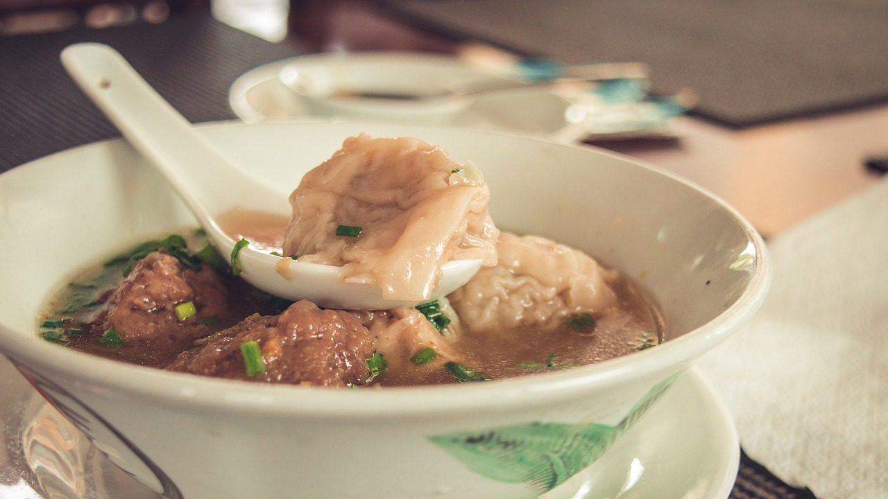

Chicken and Dumplings

Description
A simple to make traditional classic chicken soup dish with noodle-style dumplings
Ingredients
- 1 (2 to 3 pound) whole chicken
- 2 cups all-purpose flour
- 1 teaspoon baking powder
- 1 cup hot chicken broth
- 1 egg
Steps
- Cover chicken with salted water in a large stockpot or Dutch oven; simmer until cooked through and tender, remove chicken from pot and remove meat from bones. Keep chicken warm while making the dumplings.
- To make the dumplings: Sift about 2 cups of flour and 1 teaspoon baking powder into a large mixing bowl. Make a well in the flour mixture; pour in 1 cup of hot chicken broth, mixing first with a fork, then with your fingers. Add the egg and mix well again.
- Knead the dough for a few seconds on a floured board. Separate the dough into 4 or 5 parts and roll as thin as possible. Cut into 1 1/2 or 2 inch wide pieces. Break these into 2 inch long strips. Drop into boiling chicken broth and simmer for 10 to 15 minutes. Serve with previously prepared chicken.